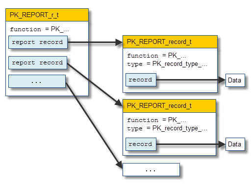
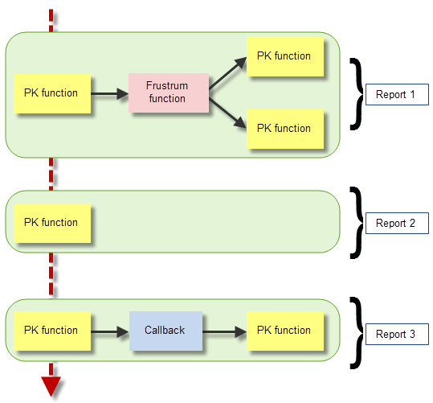

| |
Using Reports |
| <<< Tracking And Labelling | Chapters | Calling Parasolid From .NET Code >>> |
In addition to specific errors and tracking information, Parasolid provides a mechanism for creating a report structure, allowing PK functions to provide you with extra information over and above what is available via a given function’s return arguments. Parasolid’s report is intended to complement both specific errors and tracking information.
PK functions can write a report whether they succeed or fail. When a function returns an error code other than PK_ERROR_no_errors, all of its return arguments are undefined. However, a failing function can still write a valid report. This makes it a useful tool for storing detailed information about why a PK function has failed.
Parasolid maintains a single report, which is created by a call to PK_SESSION_start and remains in existence until a call to PK_SESSION_stop. Reports are stored in memory separate from Parasolid’s modelling memory and the PK memory. This memory is managed entirely by Parasolid.
A report is an entity of type PK_REPORT_t. You can get Parasolid’s own report by calling PK_REPORT_find with a
name
of
SDL/TYRP00
. You can then pass the resulting report to PK_REPORT_ask in order to obtain the contents of the report.
Parasolid’s report is written before the PK interface’s error handling is invoked. Thus if your application has registered an error handler with Parasolid, then that error handler can call PK_REPORT_ask to obtain the contents of the report.
For an example of this functionality, see the code example in the
C++\Code Examples\Application
Support\Reports
folder, located in
example_applications
in your Parasolid installation folder.
Figure 11-1 illustrates the way that report data is structured in Parasolid.
Figure 11-1 Structure of a report
The top-level PK_REPORT_r_t contains the name of the PK function that is writing to the report, together with a number of report records, each of type PK_REPORT_record_t. Each PK_REPORT_record_t contains the name of the PK function writing to the report, together with details about the
type
of data contained in that report record, and the data itself. Included within the data is a
status
that indicates the meaning of the data in the record.
In the vast majority of cases, the PK function in each PK_REPORT_record_t is the same as the PK function in the parent PK_REPORT_r_t. See Section 11.3, “Re-entrant function calls and report data”, for details of when this might not be the case.
Reports can contain different types of record, as denoted by the
type
field in PK_REPORT_record_t. Record types contain different combinations of data, but are not tied to any functional area of Parasolid. New record types may be added in future versions of Parasolid if report information needs to be stored in a format that cannot be accommodated in an existing record type.
At any time, you can think of a report as being in either an open or closed state:
For the majority of cases, the report is closed as soon as your code leaves a PK function call.
However, the PK interface is re-entrant: that is, a PK function may be called from a frustrum or callback function that has itself been called from a PK function (see Section 122.6, “Re-entrant function calls”). In any series of re-entrant calls there is a single outermost PK call. When your code leaves a PK function, the Parasolid report may be left open, depending on whether the function is re-entrant or not:
In this way, a series of re-entrant function calls may create a single report, consisting of a number of different report records. In each report record, the
function
may be different to the
function
in the report itself. Only after coming out of the outermost PK function is the report in the state where another attempt to write a report will first clear the existing contents. When a report contains several records then those records appear in the order in which they were added to the report.
Figure 11-2 shows an example in which the Parasolid report is written to three times:
Report 3 overwrites Report 2, which in turn overwrites Report 1.
Figure 11-2 Re-entrant functions and reports
The contents of the Parasolid report lasts from the time it was first written by some Parasolid function until it gets overwritten by another Parasolid function that writes a report. The content of the report is not subject to rollback. It is therefore left to you to manage the contents of the Parasolid report at any given time. For example if you wish to deal with reports written by a specific PK function then you can call PK_REPORT_clear to empty the report data before calling that function. After calling the function, use PK_REPORT_ask to return the contents of any report written.
The PK functions that you can use to access and manipulate Parasolid’s report are as follows:
|
This is called with the name |
|
|
This deletes any records currently in the report, thus freeing the memory used. It sets the number of records in the report to zero and the function of the report to the empty string. You can call this function at any time between calls to PK_SESSION_start and PK_SESSION_stop. Warning: If you call PK_REPORT_clear from within a callback or frustrum function you could be clearing report contents that were written by another PK function, prior to entry of the current PK function. |
|
|
This returns the data in a report. It copies the report from Parasolid’s report memory to PK memory. The report is empty if the number of records is zero. PK_REPORT_ask is similar to PK_ERROR_ask_last in that when it is called it returns the most recently written report however many intervening PK calls there may have been.You can call this function at any time between calls to PK_SESSION_start and PK_SESSION_stop. |
|
|
This function is called to free the PK memory used by the return from PK_REPORT_ask. It does not clear the report itself. |
|
|
Whether or not the report is open. The Parasolid report can only be open if the Parasolid session is still within an outermost level PK function and some report records have already been written. Therefore this function can only return PK_LOGICAL_true if called from within a callback or frustrum function that has itself been called from an outermost level PK function. |
| <<< Tracking And Labelling | Chapters | Calling Parasolid From .NET Code >>> |